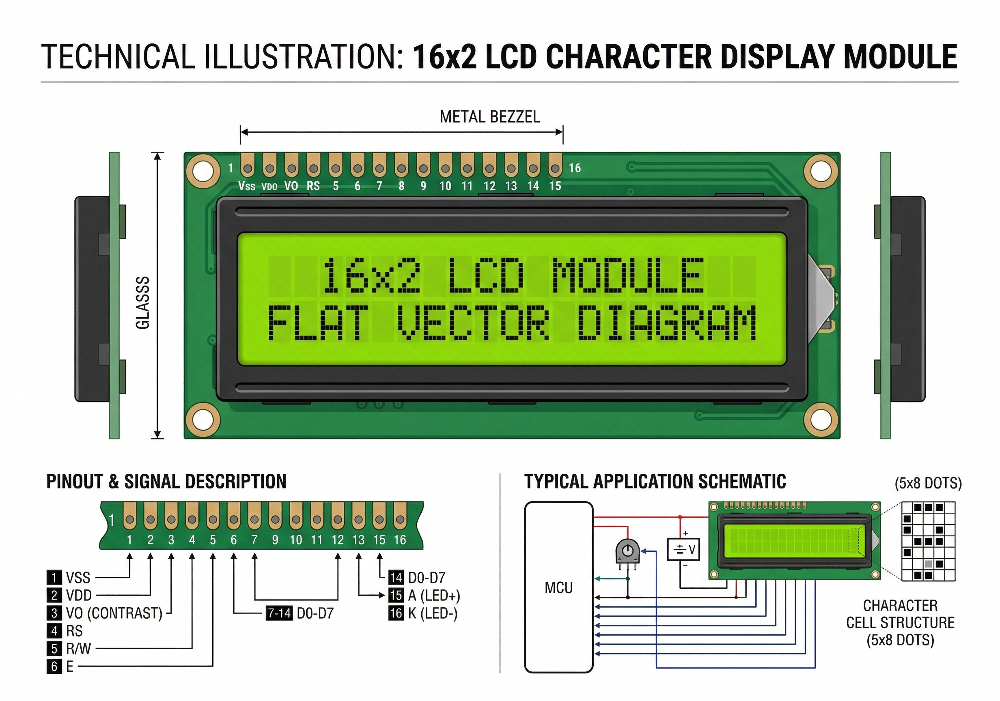

The LCD 16x2 is a very common character display that can show up to 32 characters (16 per row) across two lines. It uses the Hitachi HD44780 controller protocol, making it extremely easy to use with Arduino.

The display uses Liquid Crystal technology to block or allow light through tiny rectangular sub-pixels (5x8 dots per character).
| Pin | Symbol | Function |
|---|---|---|
| 1 | VSS | Ground (GND) |
| 2 | VDD | Power supply (5V) |
| 3 | V0 | Contrast adjustment (usually connected to a potentiometer) |
| 4 | RS | Register Select (Instruction or Data) |
| 5 | RW | Read/Write (usually grounded) |
| 6 | E | Enable Signal |
| 11-14 | D4-D7 | Data Bus (used in 4-bit mode) |
| 15 | A | Backlight Anode (+) |
| 16 | K | Backlight Cathode (-) |
In the OpenHW Studio emulator, the LCD will update its text instantly as your code runs. You don't need to worry about adjusting the contrast (V0) potentiometer in the software; it defaults to maximum clarity!
Use the standard LiquidCrystal library included with Arduino.
#include <LiquidCrystal.h>
// Initialize the library with the numbers of the interface pins
// RS, E, D4, D5, D6, D7
LiquidCrystal lcd(12, 11, 5, 4, 3, 2);
void setup() {
// set up the LCD's number of columns and rows:
lcd.begin(16, 2);
// Print a message to the LCD.
lcd.print("Hello, World!");
}
void loop() {
// set the cursor to column 0, line 1
// (note: line 1 is the second row, since counting begins with 0):
lcd.setCursor(0, 1);
// print the number of seconds since reset:
lcd.print(millis() / 1000);
}